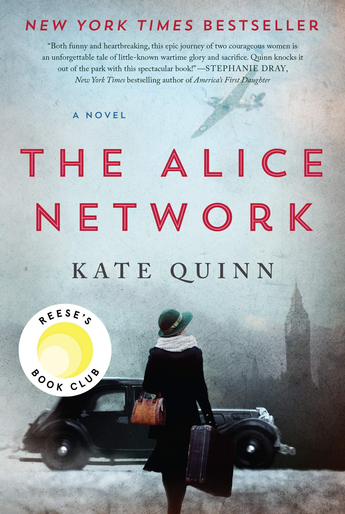

Una Marson Biography
October 1, 2021 by Maria McKenzie
 Born on February 6, 1905, Una Maud Marson, was raised in Sharon Village, St. Elizabeth and was the youngest of six children. She attended the Hamptons School for Girls, a boarding school for light-skinned and upper-middle-class white girls. Marson's years at Hampton helped her to become aware of the socio-economic and racial segregation in the society. As she grew older, she began to question her colonial education and sharpen her skills as a writer. She later became one of the founders of the Cosmopolitan Magazine that was officially published by the Jamaica Stenographers Association. Marson's position as main editor and writer of the Cosmopolitan Magazine enabled her to voice her opinions on many topics such as gender equality and racism. She highlighted all, if not most of the issues faced by the black Jamaican working-class and championed the national literary culture. Tropic Reveries, published in 1930 was Marson's first book of poetry and At What a Price, staged in 1930 was her first play.
Based on the Una Marson Biography, Una Marson was a very complex individual with a steady vision. Her complexity comes from her experiences which subsequently influenced her choices, thoughts, perspective and literary work. Her literary work, especially her poems, gave insight into her life and the issues she faced in her homeland and abroad. Her collection of poems spoke of the tension between the West Indies and the "mother country" and is assumed to have exposed her feelings and thoughts regarding certain situations. The text highlighted various themes such as identity, feminism, racism and discrimination. In addition to this, it also revealed the social and historical context in which Marson lived and how it affected her life. Furthermore, the information the text gives is priceless. Whereas, the text allows readers to appreciate the literary journey of Jamaica and the Caribbean. It gives the reader an insight as to the conditions and experiences of our ancestors and how they helped to shape the Caribbean we see today. A Caribbean free from colonial rule and discrimination. The text on a whole, recollects the life and work of Una Marson, a literary heroine, who advocated for equality among all races and genders and influenced other Caribbean natives to do the same.